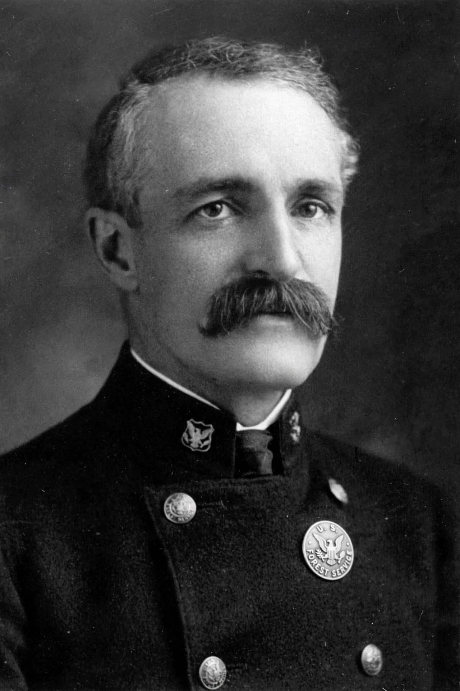

Gifford Pinchot
| Gifford Pinchot | |
|---|---|
| Born | 11 August 1865, Simsbury, Connecticut |
| Died | 4 October 1946, New York City |
| Office | 1st Chief of the US Forest Service (1905–1910); Governor of Pennsylvania (1923–27, 1931–35) |

Gifford Pinchot (11 August 1865 – 4 October 1946) was an American forester and politician who became the first chief of the United States Forest Service (1905–1910) and the intellectual leader of the utilitarian wing of the Conservation movement. His creed for public resources was 'the greatest good of the greatest number in the long run'.
Pinchot professionalised American forestry, massively expanded the national forests under President Theodore Roosevelt, and later served two terms as governor of Pennsylvania.
Conservation philosophy
Where {L('John_Muir')} defended wilderness for its own sake, Pinchot — trained in European scientific forestry and heir to a timber fortune — argued that resources should be managed, used and renewed by expert public agencies, neither locked away nor given over to monopoly. 'Conservation', a word he helped popularise in this sense, meant development with foresight: forests cut but replanted, grazing and water regulated, waste forbidden.
The split became public tragedy in the fight over damming Hetch Hetchy valley in Yosemite, where Pinchot supported the dam and Muir's preservationists lost — a rift in American conservation that has never entirely healed.
Career and conflicts
As Roosevelt's chief forester and confidant, Pinchot tripled the national forest estate and hosted the 1908 Governors' Conference that put conservation at the centre of national politics. Under President Taft he was fired in 1910 for insubordination in the Ballinger–Pinchot controversy over Alaskan coal lands, a scandal that split the Republican Party. As Pennsylvania's governor he built paved rural roads, regulated utilities and ran relief programmes in the Depression, remaining a national voice for public ownership of resources until his death.
See also: Conservation movement · John Muir · Environmental protection · Forest